记录武汉疫情下第一道防线：超300台“红外卫士”守护这个城市
原文链接 备份链接 受疫情影响，各地对非接触式的红外测温仪器的需求正在持续提升，相关企业订单也在快速增长。目前以高德红外、大立科技、久之洋、康拓红外等为代表的红外设备企业已积极调配产能，加班加点保障产品生产供应。 来源：《潜望》 作者：郭 …
当下这些天，大街上最威风的就是公共场所的安保人员和各小区的工作人员了。不管你平时多大派头，也不管你哪个星球来的，遇见他们咱都得乖乖过去，要么举起手来、要么头伸过去，挨上一枪。


虽然这几天大家 挨的枪子不少 被检测的次数不少，但对很多朋友来说，这玩意在之前的生活中还相对比较少见。因为对它的陌生，进而就衍生出了一个个萦绕在脑边问题。
测温枪是为何在你脑袋上“打一枪”就知道温度的；它测得到底准不准；以及亲戚群里最关心的，被这玩意打多了会不会影响健康？
这些问题，其实只要搞懂测温枪的原理，就会一一迎刃而解。原理虽然复杂，但不用担心，看了小姨的讲解，保准咱二舅姥爷瞅了都能理解得明明白白儿的。
被测温枪打多了会不会有损健康
被测温枪打多了会不会有损健康？——这个问题很经典。
测温枪，学名是“红外线测温仪”或者“红外线辐射测温仪”。很多人一听到“红外”“辐射”这类的词就一哆嗦，直接吓尿。
说起来，历来包含“红外”“辐射”的设备科普起来总是一件麻烦事。要知道在“亲戚群”里，才没有人信你说的“任何物体都辐射”；更不会有人跟你谈什么剂量。他们只知道只要“有辐射”，就应该“宁可信其有”。
遗憾的是，测温枪这玩意虽然名头上冠着“辐射”和“红外”，但不会对你的身体施加任何哪怕一丁点的影响。
因为它是个接收器，不是发射器。
笼统的说，红外测温仪的原理是：被动吸收目标的红外辐射能量，从而获得物体温度数值。
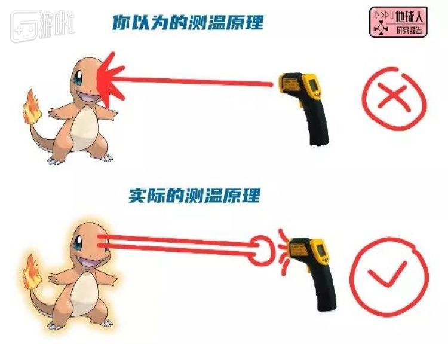
意思就是，你的身体无时无刻在向外扩散辐射能量，而测温枪的作用，是接收你身体某区域的辐射能量。如果真的说这个过程有什么危害的话，那么应该担心被辐射的也是测温枪，没准万一哪天测到个1000℃的脑门自己就憋了。
所以这玩意虽然长着一副枪的样子，但只有被动挨打的份。
好了，说明白这个问题，也许有些小伙伴就想抢答了——是不是这就意味着，测温枪的工作过程就是像温度计一样，直接隔空感受你散发的“温度信号”呢？——这样的说法其实也不太对。
红外测温枪能接收到的，只是各种波段的电磁波，绝不是直接的温度传导。而其中最关键的，从“电磁波信息”到“温度信息”的这一转换过程，就要提到今天要说的真正的重点了——黑体辐射定律。
黑体辐射定律
当你试图在中文媒体平台上搜索任何科技产品的原理时，除了会找到一些假装科普的复制粘贴怪，就是一些读理论、贴公式的读课本式的天书。
小姨喜欢把这种不负责任的科普称为“懒科普”。具体到这次的“测温枪原理”就是——他们几乎只会煞有介事地搬出基于黑体辐射定律的那段话：
自然界中一切高于绝对零度（-273.15℃）的物体都在不停向外辐射能量，物体的向外辐射能量的大小及其按波长的分布与它的表面温度有着十分密切的联系，物体的温度越高，所发出的红外辐射能力越强。
诚然，这句话是一切的基础，但是我相信如果不对里面的句子进行拆解，不解释黑体辐射的理论，几乎没有人能沉下心来去理解这话到底说了个什么意思。
哎，这事其实很简单。
这个黑体辐射定律是干啥用的呢，说白了就是物理学家想搞懂“电磁波信息”到“温度（能量）信息”的转换关系。
于是他们假想出了“黑体”这个东西。
这个时候我们继续派出小姨的老朋友 卡比 出场。假设“黑卡比”就是一个标准的“黑体”，它的特性是：入射的电磁波全部被吸收，既没有反射，也没有透射。
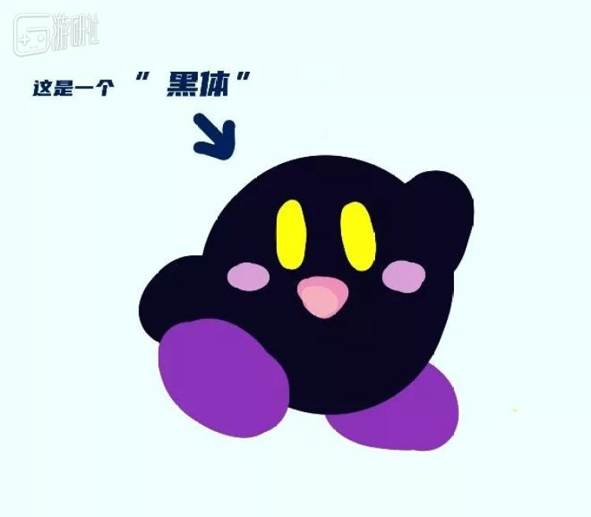
体现到卡比身上就是，吃掉的食物从来不吐出去，没有浪费地全部自己消化掉。
那么，消化掉的东西，最后就变成了卡比体内的热量，也就是热辐射（我们可以把它通俗地理解为温度）
于是这个从“电磁辐射”（光）到“热辐射”（热）的过程，就叫黑体辐射。
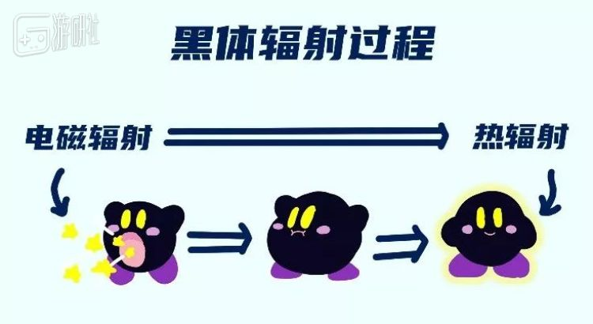
好了，知道了这个原理，现在新的问题来了——我们该怎么知道黑体吸进去的“光”到底转化成了多少“热”呢？
这个问题自从17世纪牛顿发现三棱镜光色散现象的时候就开始研究了，科学家们一直钻研了数百年，终于在1900年的时候，马克思·普朗克在德国物理学会上公布了靠谱的“黑体辐射定律公式”。
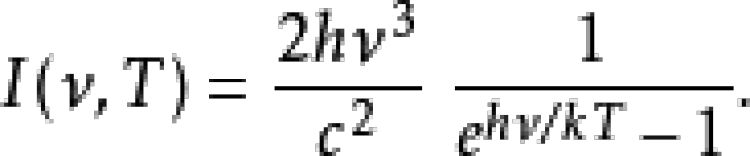黑体辐射定律公式
其中为了证明这一公式而引出的衍生品“量子力学”概念，顺道成为了现代物理学的两大基本支柱之一。
人类得到这个公式多不容易，看看它是用多少颜值换来的就知道了：
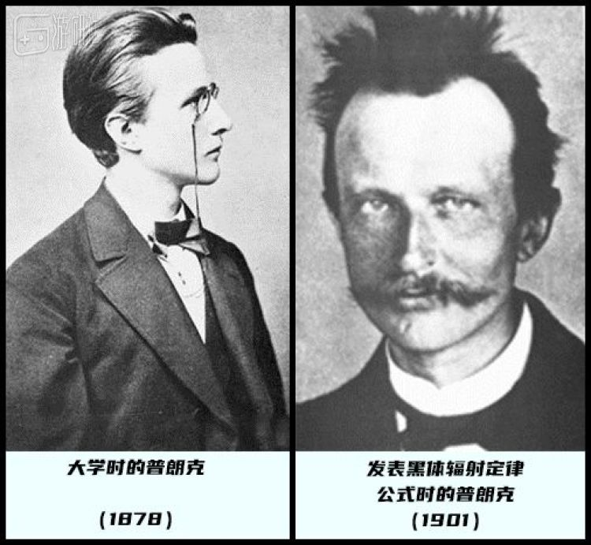
所以，为了让这消耗掉的颜值不被辜负，我们现在就了解一下这个公式，别看写起来复杂，其实都是纸老虎，它所揭示的无非是光与温度的关系——
你看如果把它画成图，是不是就好懂一些了！（并没有）
怎么理解这个图呢，这几条线的走势反映的是某个固定温度（单位K/国际标准温度单位）下，不同波长的热辐射强度。
比如里面的6000K（5727°C），这是太阳的温度——于是根据黑体辐射定律公式，我们就能分别算出太阳光中不同波长（比如红色、绿色、蓝色、某段红外线、某段紫外线……）的热辐射能量（强度/I）是多少。
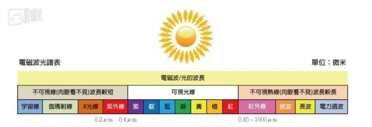
同理，如果我们知道某段光的热辐射强度和光线波长，也可以算出其代表的“温度”是多少了。
好的，我知道说到这很多同学还是想说“依然看不懂”，没关系，这会儿看睡着的同学可以醒醒了，咱把理解难度继续降维，下面才是重点。
我们只要看懂一点，就是——高温度下的黑体辐射强度，在任何一个波长范围内，都高于低温度下的黑体辐射。
反映到图里就是，1500℃的红色高温曲线，在每段波长上强度都比1200℃的黄色曲线高：
红外测温仪就是根据这一特性设计出来的。
在这个理论基础下，根据工程应用所需的测量精度不同，红外测温仪有三种主要的设计方向。
其一，单色测温法：利用单一波长下的单色辐射强度比值来判断温度；
其二，双色测温法：测量被测物体在两个波长下的辐射强度比值的强度变化来判断，这种方法比前者受外界影响更小，误差也更小；
前面这两种能不能理解看个人造化，我们详细说一下第三种——
全辐射测温法名字听起来最牛逼，但其实是三种方法里精度相对最差的一种，不过优势就在于结构简单，成本较低。
原因就在于其“大力出奇迹”式的设计思路——全辐射测温法，是通过测量辐射物体的全波长的热辐射总强度，来确定物体的辐射温度的。
我们怎么理解这个概念呢，就是好比把一个温度下的全波段辐射强度图比做一个米山，现在让卡比把整个米山全部吃掉，我们来测它吃掉后转化的热辐射能量总共有多少，最终推导出当时的温度值。
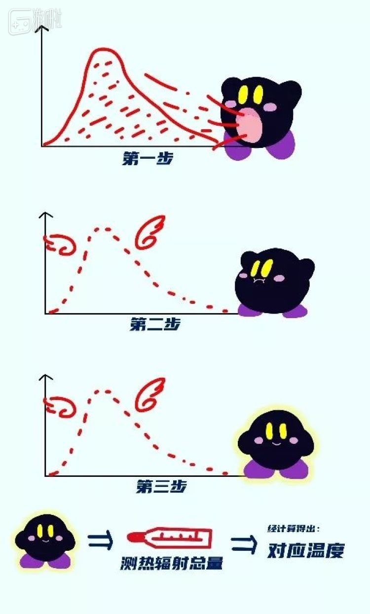全辐射测温法过程
现在小区门口给你测体温的红外线测温枪，基本都是这一思路设计的。
所以思路缕清后，我们只需把一个这样的卡比放在测温枪中，测量出它吸收辐射后释放的热辐射量，就能换算出被测物对应的温度了。
这个能将接收到的“红外电磁波辐射”转换为“热辐射”（黑体辐射过程），进而把“热辐射”转化为电信号（热电转化过程）的东西就是：热释电红外传感器（简称：PIR）
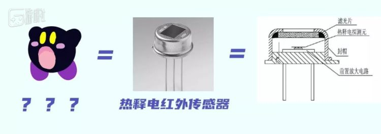
简单列一下这东西的工作原理：
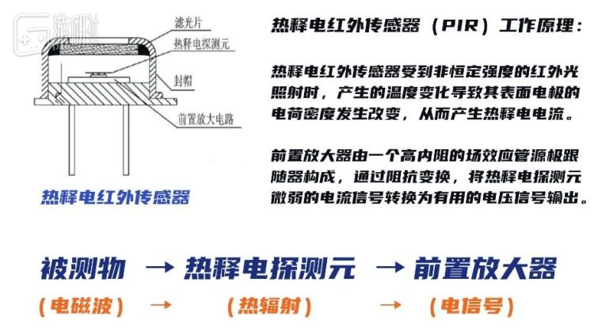
顺便说一下，这玩意还真不贵：
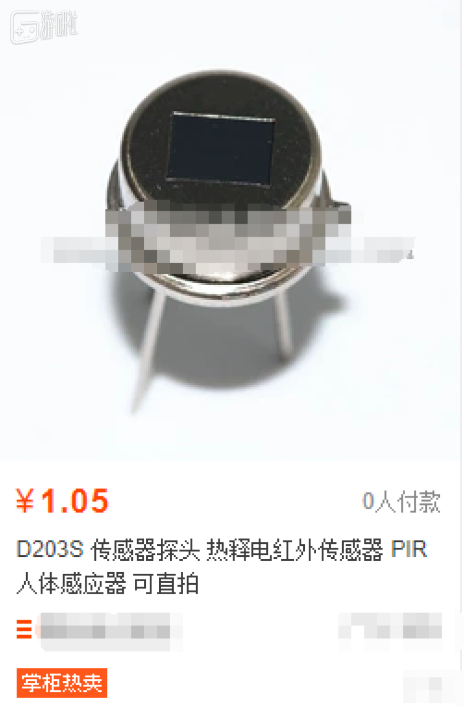
测温枪到底准不准
好了，原理搞明白，又可以回到接地气的问题上了。所以另一个大家很关心的问题，就是这玩意测得准不准呢？
影响测量结果的原因是多方面的。
其一，客观物理因素：
由于“黑体辐射定律”是在工作物质是理论黑体的情况下演算的，而生活中物质因为材质关系都是属于不同“纯度”的黑体，这个纯度用“发射率”来表示。
理论黑体的发射率是1，平时我们测温枪用的大多数都是0.95的发射率，这适用于生活中大多数的情况。所以你可以观察一下，你能见到的测温枪显示屏基本上都会写着“0.95”的字样。
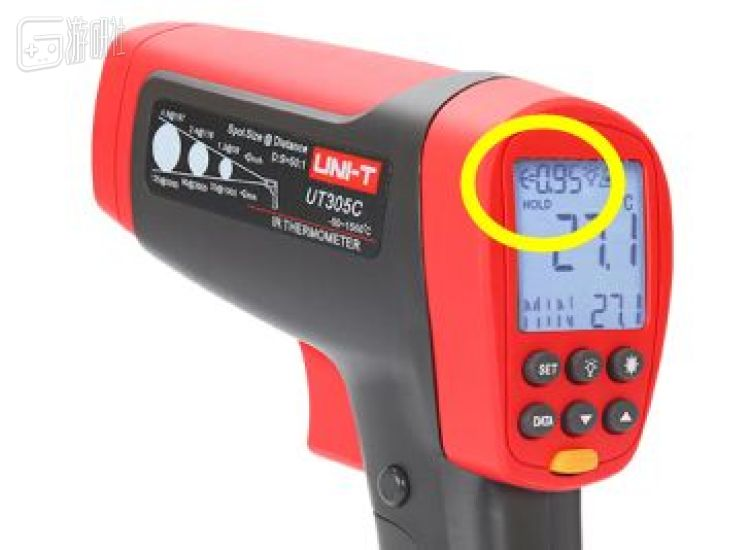
但这个0.95毕竟是根据被测物的材质而定的浮动值，这是测温枪很难绝对准确的原因之一。
其二，污染因素：
由于信息是通过电磁辐射（光）传导的，这不可避免的会受到烟尘和水蒸气等外界因素的影响；另外，机器入射口处的透镜污染也是干扰项的一环。
其三，机器精度：
因为成本原因，我们平时所用的测温枪大多没有用更精确的双色测温法技术，内部元件的精细度也参差不齐；再有就是使用时的距离误差导致的数值波动了。
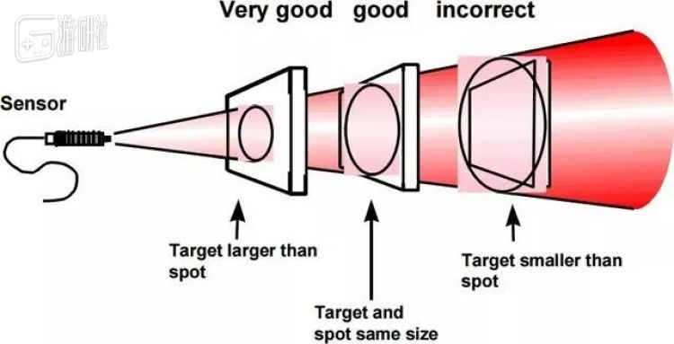
但是，这些有限的缺点还是很难成为我们拒绝测温枪的理由。
现在我们正在使用的红外测温枪，比传统的热传导测温方式还是优秀太多了——响应时间短、测温效率高，不用接触被测物体依然可以有着相对可靠的准确度，同时制作成本低廉，操作起来也足够方便。
所以反过来想想，有这么多客观因素的影响，红外测温枪依然能保证测量温度维持在相对精确的范围内，这本身就是一种很厉害的事。它没有那么完美，但依然是一种有限范围内，可以选择到的好产品。
至少在今天来看，我已经很难想像，这次防疫战中如果没有类似的科技产品的存在，仅仅是测体温这项一项，就会给防控工作带来多大的困难了。
而对小姨来说，这次能借此机会说明白测温枪的原理，能传递出多少知识倒是其次，最在意的，还是能有幸和大家再次从世界的一个角度，见证科学的力量吧。
*本文原载于“地球人研究报告”。
原文链接 备份链接 受疫情影响，各地对非接触式的红外测温仪器的需求正在持续提升，相关企业订单也在快速增长。目前以高德红外、大立科技、久之洋、康拓红外等为代表的红外设备企业已积极调配产能，加班加点保障产品生产供应。 来源：《潜望》 作者：郭 …
原文链接 备份链接 阻断新型冠状病毒引起的肺炎疫情的传播，公共交通工具的消毒防疫尤为重要。 记者 | 刘朝晖 今天，是春节后上海复工的第二周工作日的开始。从2月10日复工开始，已经有很多人重返工作岗位，同时返沪的人也越来越多，上海市内公共 …
原文链接 备份链接 经济观察网 记者 老盈盈 廖阿姨是广州的一位志愿者，她从大年初二开始在越秀区的某个公交站点驻守，2月8日起则转到了小区。她和她读中学的女儿每天早上七点从两公里外的家里到越秀某小区值班量体温，每天站岗六个小时，元宵节最忙 …